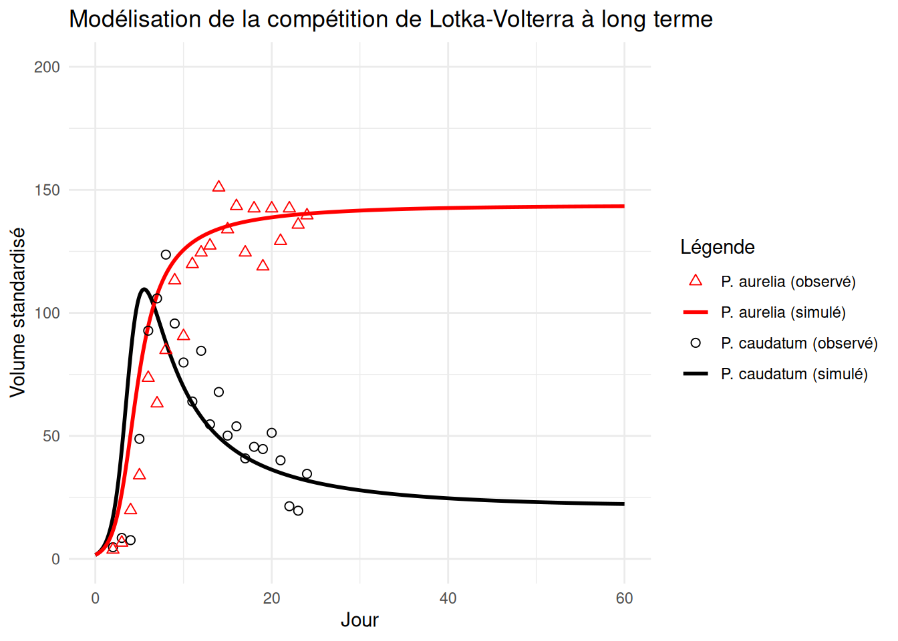

library(gauseR)
library(deSolve)La compétition interspécifique chez les paramécies
Introduction
Contexte
Dans les années 1920, Alfred J. Lotka (1925) et Vito Volterra (1926) ont publié leurs premières théories concernant les interactions entre espèces, suggérant que la structure dynamique et complexe des écosystèmes pouvait être résumée dans de simples équations mathématiques (Mühlbauer et al. 2020).
Gause (1934), s’appuyant sur les théories de A. Lotka et V. Volterra, a étudié expérimentalement la compétition entre deux espèces de protozoaires ciliés, Paramecium caudatum et Paramecium aurelia, cultivées séparément puis en mélange (Figure 1). Lorsque les deux espèces sont mises en culture ensemble, elles entrent en compétition pour les mêmes ressources, ce qui conduit au déclin progressif d’une des deux espèces : P. caudatum au profit de P. aurelia. Ce processus, appelé exclusion compétitive, a été mis en évidence expérimentalement pour la première fois au cours de cette expérience et est donc généralement attribué à Gause (d’où son nom de « principe de Gause »), mais il a été formalisé progressivement, notamment par Hardin (1960).

Le principe d’exclusion compétitive ne se limite pas aux protozoaires et s’observe aussi dans les milieux naturels. Sur les côtes écossaises, Connell (1961) a étudié la répartition de deux espèces de balanes de la zone intertidale : Chthamalus stellatus, présente dans la partie haute, et Balanus balanoides, présente dans la partie basse. Lorsqu’il retirait expérimentalement Balanus de la zone basse, Chthamalus parvenait à s’y installer et à survivre, alors qu’elle en était absente en conditions naturelles. Balanus l’en exclut en effet par compétition pour l’espace, en croissant plus vite et en la recouvrant ou en la délogeant. À l’inverse, Balanus ne peut pas coloniser la zone haute, car elle y supporte mal la dessiccation lors des marées basses. La répartition observée résulte ainsi de l’action à la fois de la compétition et des contraintes physiques. Cette étude permet en outre d’illustrer la distinction entre niche fondamentale, qui est l’ensemble des conditions où une espèce pourrait vivre, et niche réalisée, qui est la part qu’elle occupe réellement en présence de ses compétiteurs.
Dans cette étude, nous cherchons à reproduire par modélisation le processus d’exclusion compétitive décrit expérimentalement par Gause.
Équations
Le modèle de compétition de Lotka-Volterra décrit l’évolution temporelle des effectifs des deux espèces, en intégrant à la fois un effet d’auto-limitation (plus une espèce est abondante, plus sa propre croissance est freinée par la compétition intraspécifique pour les ressources) et un effet de compétition interspécifique.
\[\begin{aligned} \frac{dN_1}{dt} &= N_1 (r_1 + a_{11} \cdot N_1 + a_{12} \cdot N_2) \\ \frac{dN_2}{dt} &= N_2 (r_2 + a_{21} \cdot N_1 + a_{22} \cdot N_2) \end{aligned}\] Où : \(N_1\) et \(N_2\) désignent les effectifs des deux espèces, \(r_1\) et \(r_2\) leurs taux de croissance intrinsèques, et \(a_{ij}\) les coefficients d’interaction (intra- et interspécifiques) entre les espèces \(i\) et \(j\).
Notons que, dans cette écriture, les coefficients \(a_{ij}\) sont négatifs, ils servent à limiter la croissance de chaque espèce, soit par auto-limitation (\(i = j\)), soit par l’effet compétitif de l’autre espèce (\(i \neq j\)).
Hypothèses
L’objectif de cette étude est de modéliser le comportement des deux espèces de paramécies lorsqu’elles sont en interaction pour un même milieu. Le modèle de compétition de Lotka-Volterra repose sur plusieurs hypothèses simplificatrices (Begon, Townsend, et Harper 2006) :
- Sans compétiteur, chaque population croît selon une dynamique logistique limitée par sa propre capacité de charge
- Les deux espèces sont en compétition pour les mêmes ressources limitantes
- L’environnement est homogène et constant au cours du temps
- Les paramètres du modèle sont constants au cours du temps et ne dépendent pas de l’âge ou de l’état physiologique des individus
- Les populations sont suffisamment grandes pour écarter les effets stochastiques liés aux petites populations
Sur la base de ces hypothèses, on s’attend à observer soit une coexistence stable des deux espèces soit l’exclusion compétitive de l’une par l’autre selon les valeurs relatives des coefficients d’interaction intra et inter-spécifiques.
Chargement des données
On utilise les données originales de l’expérience de compétition de Gause (1934), republiées dans le package gauseR (Mühlbauer et al. 2020), entre Paramecium caudatum et Paramecium aurelia cultivées en mixture.
data("gause_1934_science_f02_03")
mixturedat <- gause_1934_science_f02_03[gause_1934_science_f02_03$Treatment == "Mixture", ]
time <- mixturedat$Day
species <- data.frame(mixturedat$Volume_Species1, mixturedat$Volume_Species2)
colnames(species) <- c("P_caudatum", "P_aurelia")
head(species) P_caudatum P_aurelia
1 4.751038 3.773585
2 8.529844 6.603774
3 7.637304 19.811321
4 48.794129 33.962264
5 92.756080 73.584906
6 105.877580 63.207547Estimation des paramètres
On utilise gause_wrapper() uniquement pour estimer les paramètres (\(r_1\), \(r_2\), \(a_{11}\), \(a_{12}\), \(a_{21}\), \(a_{22}\)).
gause_out <- gause_wrapper(time = time, species = species, doplot = FALSE)
gause_out$parameter_intervals lower_sd mu upper_sd
P_caudatum0 0.01033120 1.595268713 2.463299e+02
P_aurelia0 0.08812049 1.631618399 3.021066e+01
r1 0.34795148 1.259232133 4.557146e+00
r2 0.47571116 1.026156214 2.213521e+00
a11 -0.02061163 -0.005157869 -1.290709e-03
a12 -0.02361279 -0.008000167 -2.710508e-03
a21 -0.01100428 -0.001974871 -3.544183e-04
a22 -0.01459709 -0.006851130 -3.215572e-03Extraction des paramètres
params <- gause_out$parameter_intervals$mu
names(params) <- rownames(gause_out$parameter_intervals)
N0_1 <- params["P_caudatum0"]
N0_2 <- params["P_aurelia0"]
r1 <- params["r1"]
r2 <- params["r2"]
a11 <- params["a11"]
a12 <- params["a12"]
a21 <- params["a21"]
a22 <- params["a22"]
c(r1, r2, a11, a12, a21, a22) r1 r2 a11 a12 a21 a22
1.259232133 1.026156214 -0.005157869 -0.008000167 -0.001974871 -0.006851130 Extraction des paramètres estimés du modèle de Lotka-Volterra et des effectifs initiaux des deux espèces à partir des résultats de l’ajustement.
Les valeurs des taux de croissance intrinsèques (\(r_1\) et \(r_2\)) et des coefficients d’interaction (\(a_{ij}\)) traduisent la dynamique propre de chaque espèce. En particulier, les coefficients négatifs confirment l’effet auto-limitant et la friction de la compétition interspécifique sur les populations.
Simulation du modèle de compétition
compet <- function(t, N, param){
r1 <- param[1]; r2 <- param[2]
a11 <- param[3]; a12 <- param[4]
a21 <- param[5]; a22 <- param[6]
N1 <- N[1]; N2 <- N[2]
dN1 <- N1 * (r1 + a11 * N1 + a12 * N2)
dN2 <- N2 * (r2 + a21 * N1 + a22 * N2)
list(c(dN1, dN2))
}parametres <- c(r1 = r1, r2 = r2, a11 = a11, a12 = a12, a21 = a21, a22 = a22)
N0 <- c(N0_1, N0_2)
temps_sim <- seq(0, 60, by = 0.1)
sol <- ode(y = N0, times = temps_sim, func = compet, parms = parametres)Le modèle de compétition de Lotka-Volterra a été implémenté manuellement à partir des équations présentées par (Mühlbauer et al. 2020), puis résolu numériquement à l’aide de la fonction ode().
library(ggplot2)
# Transformation du résultat de l'ode en data.frame propre pour ggplot
df_sim <- data.frame(
Jour = sol[,1],
P_caudatum = sol[,2],
P_aurelia = sol[,3]
)
# Données observées (expérimentales)
df_obs <- data.frame(
Jour = time,
P_caudatum = species$P_caudatum,
P_aurelia = species$P_aurelia
)
# Tracé avec ggplot2
ggplot() +
# Courbes simulées (lignes)
geom_line(data = df_sim, aes(x = Jour, y = P_caudatum, color = "P. caudatum (simulé)"), linewidth = 1) +
geom_line(data = df_sim, aes(x = Jour, y = P_aurelia, color = "P. aurelia (simulé)"), linewidth = 1) +
# Points observés (données de Gause)
geom_point(data = df_obs, aes(x = Jour, y = P_caudatum, color = "P. caudatum (observé)"), shape = 1, size = 2) +
geom_point(data = df_obs, aes(x = Jour, y = P_aurelia, color = "P. aurelia (observé)"), shape = 2, size = 2) +
# Personnalisation des couleurs et de la légende
scale_color_manual(name = "Légende",
values = c("P. caudatum (simulé)" = "black",
"P. aurelia (simulé)" = "red",
"P. caudatum (observé)" = "black",
"P. aurelia (observé)" = "red")) +
# Thème et axes
labs(x = "Jour", y = "Volume standardisé",
title = "Modélisation de la compétition de Lotka-Volterra à long terme") +
xlim(0, 60) +
ylim(0, 200) +
theme_minimal()
compet.
Discussion
Interprétation des dynamiques de population
Les résultats de notre simulation reproduisent la dynamique observée par Gause : en culture mixte, Paramecium caudatum décline progressivement tandis que Paramecium aurelia prend le dessus et se stabilise autour de 140 unités de volume dans la simulation (Figure 2).
Les paramètres estimés montrent que chaque espèce freine sa propre croissance (auto-limitation) mais aussi celle de l’autre, ce que prévoit la théorie de Lotka-Volterra (Mühlbauer et al. 2020). Si P. aurelia prend l’avantage, c’est parce que son effet inhibiteur sur P. caudatum est plus fort que l’inverse. P. aurelia est donc une meilleure compétitrice pour cette ressource.
Toutefois, la simulation ne montre pas une disparition complète de P. caudatum : sa courbe se stabilise à un faible effectif (Figure 2). Avec les paramètres estimés, le modèle suggère donc plutôt un maintien à faible effectif qu’une exclusion stricte, ce qui nuance le principe d’exclusion compétitive tel qu’il est décrit à partir de l’expérience de Gause.
Limites du modèle
Le modèle reproduit bien la tendance générale observée en conditions expérimentales (déclin de P. caudatum, puis stabilisation de P. aurelia) mais illustre moins bien la période transitoire qui a lieu entre le 4ᵉ et le 10ᵉ jour. Ces écarts peuvent s’expliquer par les hypothèses simplificatrices du modèle (Begon, Townsend, et Harper 2006) : milieu homogène et paramètres constants dans le temps, qui ne représentent pas un système de culture réel plus complexe.
Par ailleurs, les observations s’arrêtant au jour 24, on ne peut pas savoir si P. caudatum se stabilise réellement à faible effectif ou continue de décliner.
Les auteurs du package gauseR mettent eux-mêmes en lumière une limite importante : la méthode d’ajustement des moindres carrés utilisée prend seulement en compte l’erreur de mesure et non les autres sources d’incertitudes liées au processus biologique lui-même (Mühlbauer et al. 2020).
Des méthodes plus récentes permettent d’isoler ces biais, ce qui éviterait de supposer que le modèle décrit une dynamique déterministe. Le modèle de Lotka-Volterra reste donc une approximation, surtout valable autour de l’équilibre, plutôt qu’une description exacte de ce qui se passe biologiquement.
Perspectives
Plusieurs pistes nous permettraient d’aller plus loin :
- Minimiser les biais en séparant le bruit d’observation du bruit de processus, ce que suggèrent les auteurs de gauseR eux-mêmes.
- Faire varier les coefficients d’interaction selon la taille ou la composition de population afin d’obtenir un modèle plus réaliste, ce qui a déjà été proposé dans la littérature (Mühlbauer et al. 2020).
Conclusion
Pour conclure, cette étude reprend les données historiques de Gause (Gause 1934) pour estimer les paramètres d’un modèle de compétition de Lotka-Volterra et simuler la dynamique entre P. caudatum et P. aurelia. Les résultats montrent une compétition asymétrique en faveur de P. aurelia. Toutefois, la simulation ne conduit pas à la disparition de P. caudatum : le modèle suggère un maintien à faible effectif plutôt qu’une exclusion stricte. Le modèle capture bien la tendance générale mais reflète moins la réalité expérimentale lors de la phase de transition (4ᵉ au 10ᵉ jour), ce qui rappelle les limites des hypothèses posées au départ.
Des approches plus récentes complètent ce cadre. La théorie moderne de la coexistence (Barabás, D’Andrea, et Stump 2018) permet de distinguer ce qui relève des différences de niche de ce qui relève des différences d’aptitude entre espèces, ce qui est précisément la question posée ici. Les modèles de consommation de ressources, développés en écologie microbienne, pourraient aussi aider à expliquer les écarts de la phase transitoire.
Bibliographie
Barabás, György, Rafael D’Andrea, et Simon Maccracken Stump. 2018. « Chesson’s Coexistence Theory ». Ecological Monographs 88 (3): 277‑303. https://doi.org/10.1002/ecm.1302.
Begon, Michael, Colin R. Townsend, et John L. Harper. 2006. Ecology: From Individuals to Ecosystems. Malden: Blackwell Publishing.
Connell, Joseph H. 1961. « The Influence of Interspecific Competition and Other Factors on the Distribution of the Barnacle Chthamalus Stellatus ». Ecology 42 (4): 710‑23. https://doi.org/10.2307/1933500.
Gause, G. F. 1934. « Experimental Analysis of Vito Volterra’s Mathematical Theory of the Struggle for Existence ». Science 79 (2036): 16‑17. https://doi.org/10.1126/science.79.2036.16.b.
Hardin, Garrett. 1960. « The Competitive Exclusion Principle: An Idea That Took a Century to Be Born Has Implications in Ecology, Economics, and Genetics. » Science 131 (3409): 1292‑97. https://doi.org/10.1126/science.131.3409.1292.
Lotka, Alfred J. 1925. Elements of Physical Biology. Baltimore. https://archive.org/details/elementsofphysic017171mbp.
Mühlbauer, Lina K., Maximilienne Schulze, W. Stanley Harpole, et Adam T. Clark. 2020. « gauseR: Simple Methods for Fitting Lotka-Volterra Models Describing Gause’s “Struggle for Existence” ». Ecology and Evolution 10 (23): 13275‑83. https://doi.org/10.1002/ece3.6926.
Volterra, Vito. 1926. « Variazioni e fluttuazioni del numero d’individui in specie animali conviventi ». Memorie della Reale Accademia Nazionale dei Lincei. Classe di Scienze Fisiche, Matematiche e Naturali 2: 31113. https://jxshix.people.wm.edu/2009-harbin-course/classic/Volterra-1928.pdf.